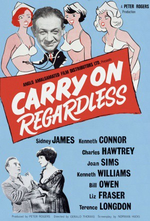
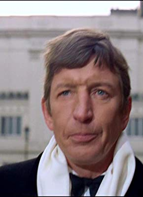
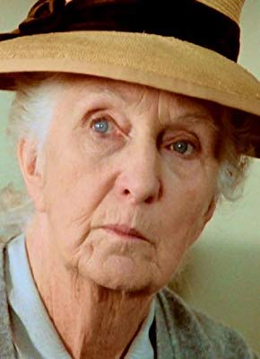
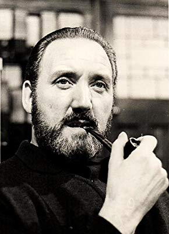
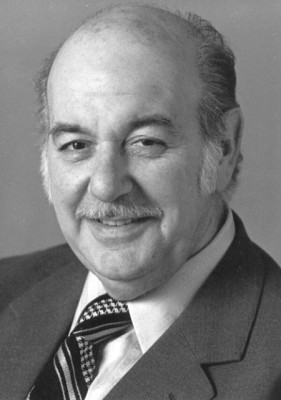
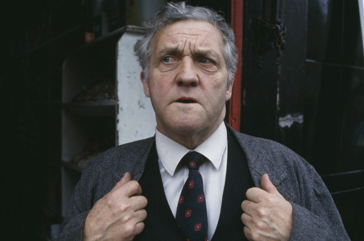
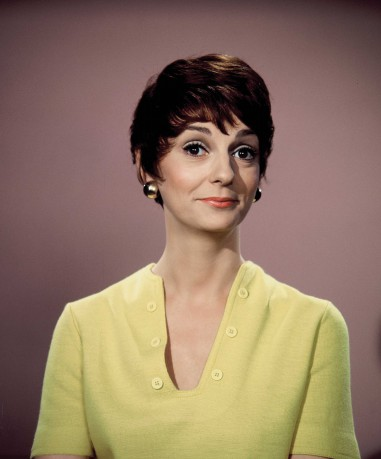
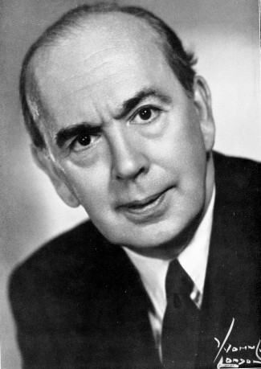

#11778 Carry On 05 - Ist ja irre - Nicht so toll, Süßer! *OmU*
Alternativ: Carry On Regardless
 
 IMDB-Wertung: 6.1 / 10
IMDB-Wertung: 6.1 / 10  Metascore: 0
Metascore: 0 
The Helping Hands agency employs some very strange people to perform some very strange jobs! Even the simplest of tasks get bungled by the incompetent but lovable staff, as they get given jobs ranging from taking animals for walks (no ordinary animals you understand) to demonstrating new products at a large and prestigious exhibition...
Jahr: 1961
Dauer: 86 Minuten
FSK:
Land: England Studio: Carol Media HomeTonspuren:
Untertitel:
Auflösung: SD (672x400) Größe: 573 MB
Genre: Komödie
Regisseur: Gerald Thomas, Ralph Thomas
Drehbuch: Norman Hudis
Soundtrack: Bruce Montgomery
Darsteller:
 Sidney James als Bert Handy
Sidney James als Bert Handy Kenneth Connor als Sam Twist
Kenneth Connor als Sam Twist Charles Hawtrey als Gabriel Dimple
Charles Hawtrey als Gabriel Dimple Joan Sims als Lily Duveen
Joan Sims als Lily Duveen Kenneth Williams als Francis Courtenay
Kenneth Williams als Francis Courtenay Bill Owen als Mike Weston
Bill Owen als Mike Weston Liz Fraser als Delia King
Liz Fraser als Delia King-  Terence Longdon als Montgomery Infield-Hopping
 Hattie Jacques als Hospital Sister
Hattie Jacques als Hospital Sister- Esma Cannon als Miss Cooling
- Julia Arnall als Trudy Trelawney
- Terence Alexander als Trevor Trelawney
-  Joan Hickson als Hospital Matron
- Fenella Fielding als Penny Panting
-  David Lodge als Wine Connoisseur
- Ambrosine Phillpotts als Yoki's Owner
- Cyril Raymond als Army Officer
-  Eric Pohlmann als Sinister Man
- Judith Furse als Headmistress
- Howard Marion-Crawford als Wine-Tasting Organiser
- Joe Robinson als Dynamite Dan
-  Norman Rossington als Boxing Referee
- Patrick Cargill als Raffish Customer
-  Carole Shelley als Helen Delling
 Ed Devereaux als Mr. Panting
Ed Devereaux als Mr. Panting Victor Maddern als First Sinister Passenger
Victor Maddern als First Sinister Passenger-  Ronald Adam als (Part cut) (uncredited)
 Maxwell Craig als Boxing Patron (uncredited)
Maxwell Craig als Boxing Patron (uncredited) Victor Harrington als Wine Taster (uncredited)
Victor Harrington als Wine Taster (uncredited)- Angus Lennie als Shop assistant (scene cut (uncredited)
- Denis Shaw als Second Sinister Passenger (uncredited)
 Ian Wilson als Advertising Man (uncredited)
Ian Wilson als Advertising Man (uncredited)- Sydney Tafler als Strip Club Manager
- Stanley Unwin als Landlord
- Betty Marsden als Mata Hari
- Jerry Desmonde als Martin Paul
- Nicholas Parsons als Wolf
- Cyril Chamberlain als Policeman
- June Jago als Nurse
- Michael Ward als Photographer
- Douglas Ives als Fanatic Patient
- Eric Boon als Young Man
- Tom Clegg als Massive Mickey McGee
- Fraser Kerr als The Landlord
- David Williams als Policeman
- Jack Taylor als MC / Policeman
- Freddie Mills als Lefty
- Anthony Sagar als Bus Conductor
- David Stoll als Distraught Manager
- Ian Curry als Leonard Beamish
Datei: X:\7+mehr(A-Z)\Carry On\Carry On 05 - Ist ja irre - Nicht so toll, Süßer! OmU (1961, FSK, 672x400).mp4 seit 20.09.2019
Festplatte: HD Collection-7+mehr(A-Z)+Person
 Es gibt insgesamt 33 Filme in der Gruppe '7+mehr(A-Z)\Carry On'
Es gibt insgesamt 33 Filme in der Gruppe '7+mehr(A-Z)\Carry On'